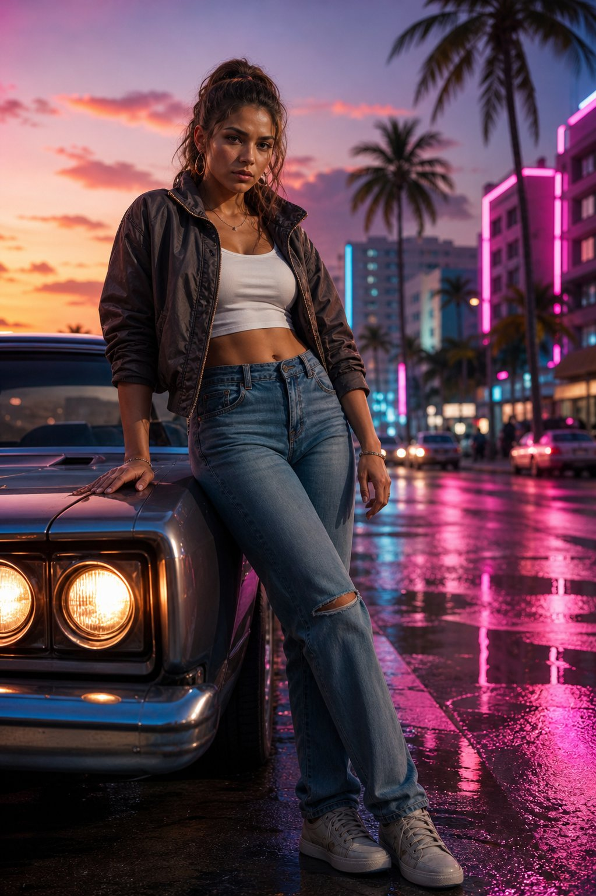
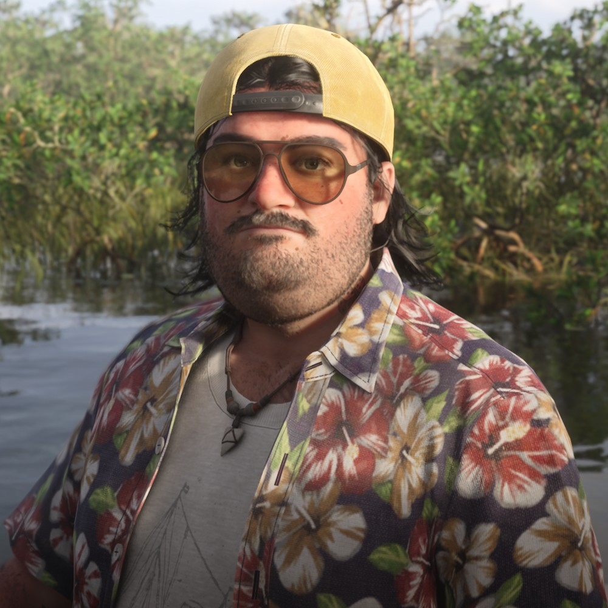
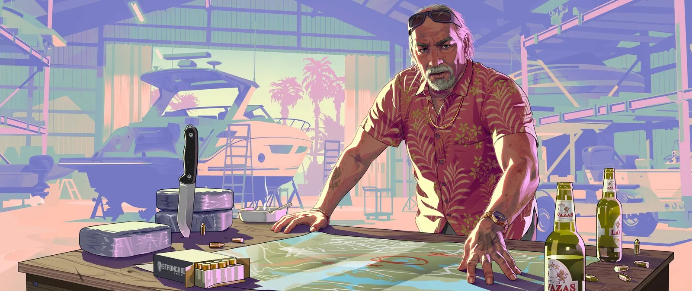
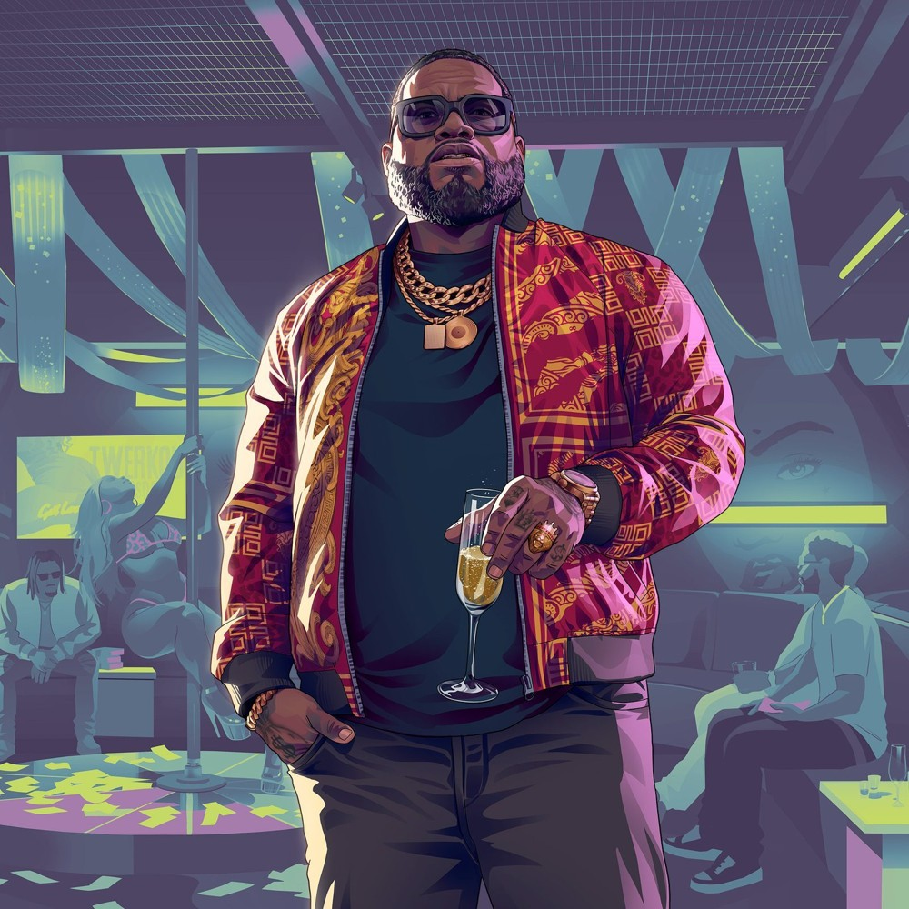
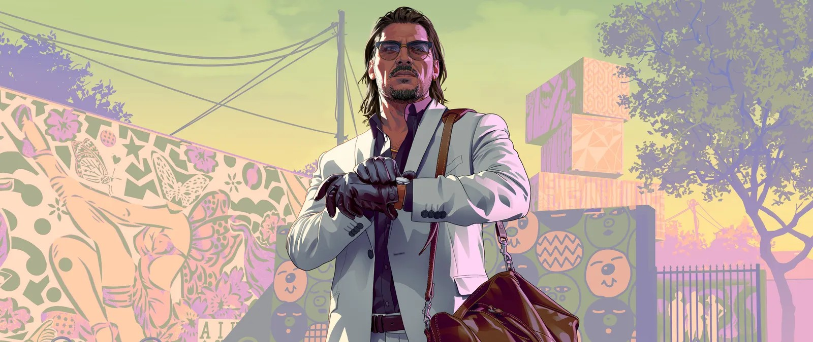
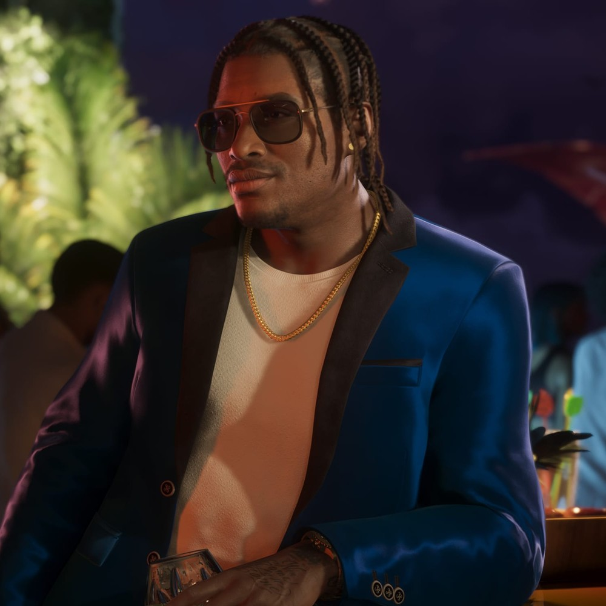

ACCUEIL / Personnages
Sous-page · sourcée au 18 novembre 2026Personnages principaux
Jason Duval et Lucia Caminos, deux criminels liés par un même destin.
Jason DuvalJason Duval
Jason veut une vie plus simple, mais les choses ne cessent de se compliquer. Il a grandi entouré d’escrocs, a servi dans l’armée, puis s’est retrouvé dans les Keys à travailler pour des trafiquants locaux.
« Meeting Lucia could be the best or worst thing to ever happen to him. » Rockstar Games · profil de Jason
Traduction : Rencontrer Lucia pourrait être la meilleure ou la pire chose qui lui soit arrivée.
Rockstar ne détaille pas ici les choix de dialogue ; les mécaniques de relation sont décrites en section 3.
Lucia CaminosLucia Caminos

Son père lui a appris à se battre dès qu’elle a su marcher. Combattre pour sa famille l’a menée à la prison de Leonida ; une chance inattendue l’en a sortie. Elle veut la belle vie dont rêve sa mère, et elle est prête à prendre les choses en main.
« A life with Jason could be her way out. » Rockstar Games · profil de Lucia
Traduction : Une vie avec Jason pourrait être sa porte de sortie.
Note : la chance évoquée par Rockstar n’est pas expliquée dans la présentation officielle. Les spéculations sur son passé sont des rumeurs.
Cal Hampton et BrianSupporting cast

Source : Wiki : gta.wiki (portrait)Cal Hampton
Ami de Jason et associé de Brian. Il se sent plus en sécurité chez lui, à écouter les communications de la garde côtière avec quelques bières et des onglets privés ouverts.
EN : « Jason’s friend and a fellow associate of Brian’s… snooping on Coast Guard comms. »

Source : Wiki : leonidainteractive.comBrian Heder
Présenté comme un trafiquant de l’âge d’or de la contrebande dans les Keys, toujours actif avec son chantier naval. Ce détail provient de profils repris par des sites tiers : vérifiez-le sur la page officielle des personnages.

Source : Wiki : gta6index.comBoobie Ike
« Une légende locale de Vice City, qui agit comme telle. » Immobilier, club de strip-tease et studio d’enregistrement ; il dirige Only Raw Records avec Dre’Quan. Rockstar le décrit comme « tout sourire jusqu’à ce qu’il faille parler affaires ».
Source : Rockstar, relayée par iGameMag (18 nov. 2026)

Source : Wiki : leonidainteractive.comRaul Bautista
Présenté comme un braqueur de banque chevronné, sûr de lui et charmant, qui recrute des talents pour ses prochains coups. Profil repris par un site spécialisé (avril 2026), non confirmé en détail par Rockstar.

Source : Wiki : gta.wiki (portrait)Dre’Quan Priest
Jeune magnat de la musique, associé de Boobie Ike au sein d’Only Raw Records, un label qui a besoin d’un tube (présentation relayée par la presse : MMO Culture, 14 oct. 2026 ; iGameMag, 18 nov. 2026).
Une relation qui compteA relationship that matters
Selon VGC, qui a joué une version de test, le jeu suit une jauge de relation entre Jason et Lucia. Elle influence l’histoire et les fins, et les braquages réussis sans être repéré la renforcent.
Presse Ce mécanisme est rapporté par la presse. Son fonctionnement exact, ses seuils et ses effets ne sont pas documentés par Rockstar à cette date.
Le jeu permet aussi de contrôler souvent l’un ou l’autre personnage, voire de changer en cours de mission. Selon la même critique, les missions changent alors de manière importante.
⚠ Débat communautaire (non vérifié)
Sur Reddit, des discussions évoquent si la romance est facultative. Une partie des fans cite des interviews, mais aucune source officielle n’a été retrouvée. Le guide ne tranche pas ce débat.